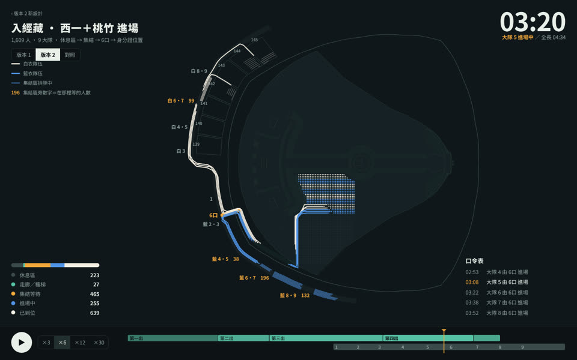
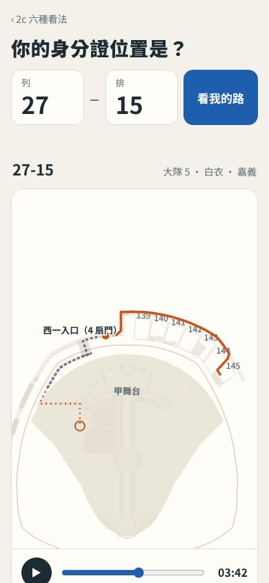
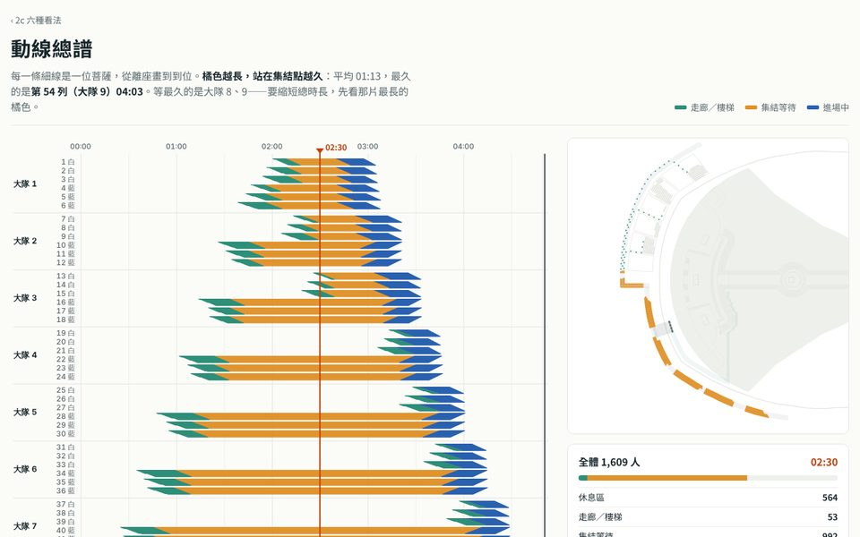
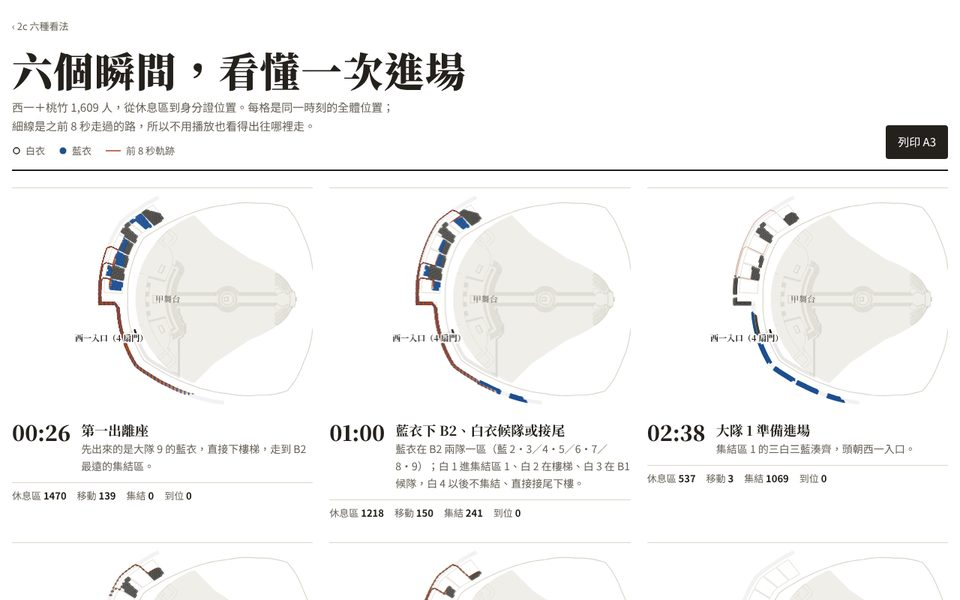
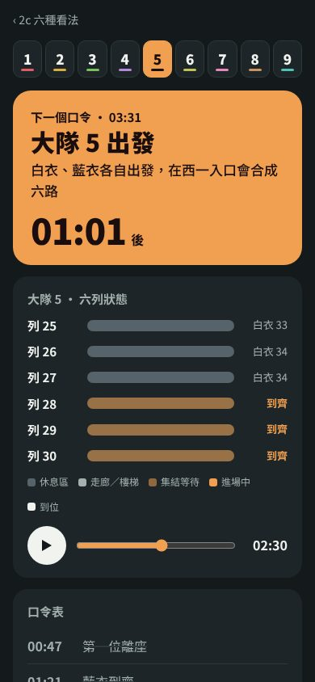

同一份版本 2 動線資料（藍衣全部 B2 集結），依「給誰看、在哪裡看」拆成五個頁面。資料直接讀原本的版本 2 頁，動線沒有重算；原本的頁面照舊保留，可以開兩個分頁並排比較。每個頁面也都能切到版本 1，或兩版對照。
原本的版本 2 頁單頁：地圖＋播放列＋側欄版本 1 頁10/18 座位 · 原排法
原本的頁面一頁服務所有人；新設計依讀者拆開，各自只放那個人需要的東西。
| 想做的事 | 原本的版本 2 頁 | 新設計 |
|---|---|---|
| 找自己的路 | 側欄輸入「列-排」，四步口令卡；地圖北朝上，畫全部 1,609 人 | B 我的路：手機優先，列、排分兩格輸入；地圖甲舞台朝上，與 app《我的走位》同向，只畫你和你這一列 |
| 大隊長喊口令 | 用篩選留下一個大隊，自己看時間軸推算 | E 口令卡：整頁換成大隊色，下一個口令與倒數、六列各自到齊沒 |
| 看全場、投影說明 | 地圖＋播放列＋四格統計，側欄占三分之一 | A 指揮台：滿版深色、每一列畫成一條隊伍線、自動往前捲的口令表 |
| 找瓶頸、調排程 | 播放時看集結區的人數圈 | C 總譜：54 列 × 時間攤開，每人一條線，橘色越長等越久 |
| 印給集結區 | 沒有 | D 講義：六個關鍵時刻，A3 橫式 |
| 和版本 1 比 | 另開版本 1 頁來回切 | 每頁右上角都有「對照」 |





直接從兩個版本頁讀出的數字，版本頁重新產生後這裡會跟著變。
讀取兩個版本的資料…
這些頁面直接讀版本 1、版本 2 頁內嵌的動線資料，不另存副本，所以要經由網頁伺服器開啟（GitHub Pages，或本機 python3 -m http.server）。動線為示意，實際依企劃現場指示。